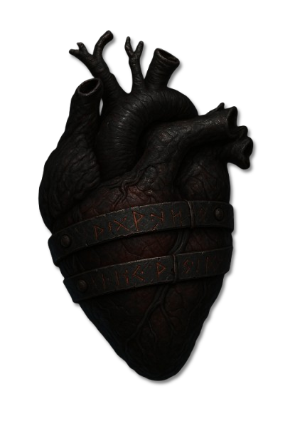
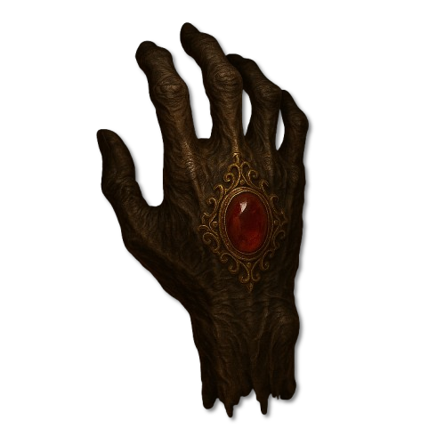
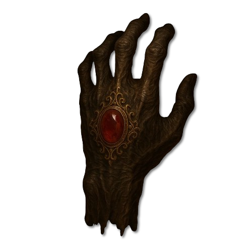
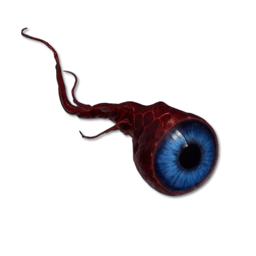
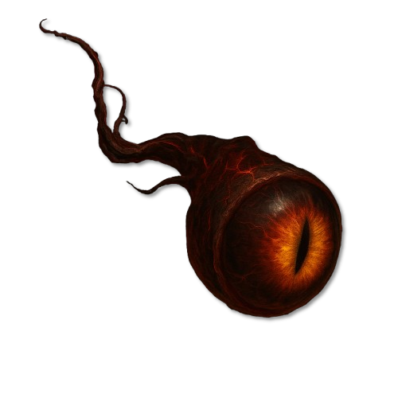
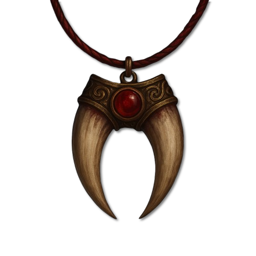

Einführung
Zarakhul, der heute nur noch als der Tyrann bekannt ist, war einst ein celestialer Untergott – eine erhabene Entität der alten Ordnung, verehrt als der Chronist.
In der frühen Schöpfung galt er als Gott der Geschichte, der Souveränität und der Krone – ein göttlicher Archivar und Richterkönig, der die Taten von Völkern und Monarchen im Buch der Ewigkeit verzeichnete. Seine göttlichen Tugenden waren Stolz, Erhabenheit und Ehrfurcht – Qualitäten, die ihn zu einem Hüter des Thrones und zum Sinnbild göttlicher Autorität machten.
Doch als der Große Spalt die Ordnung der Götter erschütterte, wurde Zarakhuls Wesenskern selbst zum Bruch.
In allegorischer Deutung wird Zarakhul von manchen als mehr denn ein Individuum verstanden – als eine Manifestation des göttlichen Widerstandes selbst, ein verdichteter Schatten jener Zweifel, die einst selbst in den höchsten Sphären existierten.
Vielleicht war er nicht einmal "nur" ein Untergott, sondern eine Rückwirkung der göttlichen Spaltung – der letzte Auswurf jener göttlichen Kräfte, die den Menschen niemals akzeptieren konnten. In diesem Sinn wäre Zarakhul nicht nur gefallen, sondern geboren aus den Rissen im göttlichen Selbstverständnis. Ein Gedanke. Ein Fluch. Eine Ordnung, die sich selbst nicht fügen konnte.
Mit dem Großen Spalt, der die Welt der Celestianer und Infernalen entzwei riss, wurde Zarakhul aus dem Wesen der Neun selbst herausgebrannt – und trat als gefallene Krone, als Tyrann, in die materielle Welt ein.
Er war kein Verbannter. Er war die Inkarnation des göttlichen Stolzes, der sich weigerte, zu dienen. Und Aleria sollte der Ort seiner Krönung sein – über einer Menschheit, die er nicht als Kinder, sondern als Missgeburten der Schöpfung sah.
Wesenheit
Zarakhul, bekannt als der Tyrann, war einst ein celestialer Untergott, geboren aus den uralten Prinzipien der Ordnung, Erinnerung und Übergänge. In der göttlichen Hierarchie der Neun diente er lange Zeit als Fährmann und Chronist, ein stiller Wächter über das Buch der Toten und die Pfade der Seelen.
Doch mit der Erschaffung der Menschheit offenbarte sich in ihm ein Riss. Zarakhul erhob Einspruch gegen die Geburt dieser neuen, schwachen, chaotischen Rasse – nicht aus Trotz, sondern aus tiefer Ablehnung und Stolz. In seinen Augen war die Menschheit eine Verfehlung der Schöpfung, eine Beleidigung der göttlichen Ordnung, die er einst mitgetragen hatte.
Als die Neun ihn nicht erhörten, verließ er freiwillig seine göttliche Ebene. Keine Verbannung, kein Sturz – Zarakhul manifestierte sich aus eigenem Willen in der sterblichen Welt Alerias, um seine eigene Vision von Ordnung zu errichten: Die Tilgung der Menschheit.
Er wurde nicht zum Rebellen, sondern zum Richter – nicht zum Dämon, sondern zum Tyrannen.
Von jenem Moment an wandelte er nicht mehr als Diener der Neun, sondern als selbsternannter Gottkönig, der sich über jede irdische und göttliche Autorität stellte. Sein Ziel war klar:
Die absolute Herrschaft über die Menschen. Und wenn das nicht möglich war – ihre vollständige Auslöschung.
Macht
Zarakhul gilt als das mächtigste gefallene Wesen, das je Aleria betreten hat. Er war der erste wahre Feind der Menschheit, der sich mit gottgleicher Präsenz und Zielstrebigkeit gegen das Bestehen der Sterblichen stellte. Sein Auftreten markiert den Beginn des Zeitalters der Bedrohung – ein dunkles Echo nach dem Großen Spalt, in dem viele andere göttliche Wesen ihre Schattenseiten offenbarten.
Die Chroniken der Elfen und Druiden beschreiben Zarakhul als eine Art untoten Gottkönig, in Leichengewändern gehüllt, umflort von schwarzer Glut, seine Stimme wie ein Urteil, das kein Leben verschont
Es gibt keine Überlieferung, die seine vollständige Form je beschreibt – weder göttlich noch sterblich konnten seine Erscheinung vollständig erfassen.
Domäne
Die ältesten Überlieferungen der Druidenzirkel, ebenso wie erhaltene Reliefs, Siegel und Fragmente aus dem versunkenen Königreich der Alben, sprechen von Zarakhul als einer der frühesten und zugleich verheerendsten Erscheinungen göttlicher Verderbnis in Aleria.
In jener fernen Zeit war die Menschheit noch jung, ungeformt, tastend – die Druiden waren zahlreich, weise und voller Leben, und das albische Reich befand sich in der goldenen Blüte seiner Macht und Kultur.
Zarakhul erschien nicht als Eroberer, sondern als Prophet – eine Gestalt von finsterer Würde, gehüllt in uralte Lehren und Worte, die wie göttliche Offenbarungen klangen. Er wandelte durch das südliche Kontinentreich Tirnaras und versammelte eine neue Art von Gefolgschaft um sich – Menschen, die nach Ordnung dürsteten, nach Wahrheit in einer Welt, die sie nicht verstanden.
Dort, unter vergessenen Bannzeichen, krönte er sich selbst zum Gottkönig.
Was als Lehre begann, wurde zur Tyrannei. Region um Region fiel unter seine Herrschaft. Seine Feinde wurden versklavt, seine Kritiker geopfert, seine Gegner gebrochen.
Die Druiden jener Zeit erzählen von ganzen Hainen, die in Flammen aufgingen, von heiliger Erde, die durch seine Anwesenheit verdarb, und von zahllosen Brüdern und Schwestern, die unter seinem Banner ihr Leben ließen.
Das Zeichen des Drachen
Als seine Herrschaft über das Südland wuchs, und keine Macht ihn mehr aufzuhalten schien, wandten sich die Druiden an die Götter selbst. Die Antwort kam nicht in Worten, sondern in der Neugestaltung des Himmels.
Die Neun gaben dem Firmament ein neues Bild:
Das Zeichen des Drachen – ein Sternbild, das nur einmal alle Äonen unter besonderen Konstellationen Kinder hervorbringt, die unter seinem Licht geboren werden. Jene Auserwählten tragen eine Bürde, ein Schicksal – und eine Kraft, die nicht von dieser Welt ist. Sie werden zu Wächtern gegen die Finsternis, welche die Ordnung bedroht.
Der erste Drachengeborene, so erzählt man, wurde in jener Zeit unter diesen Himmelszeichen geboren.
Die Druiden, angeführt von den ältesten Zirkeln, lehrten ihn – die alten Pfade, das Wesen des Tyrannen, die alten Gesänge und die wahre Bedeutung des Firmaments. Mit ihrer Hilfe war es ihm möglich, das zu vollbringen, was keine Armee vermochte: Den Tyrannen zu bezwingen.
Zerschlagung und Bann
Doch ein Gott, selbst gefallen, kann nicht einfach getötet werden. Die Erzdruiden, neun an der Zahl, verstanden dies. Sie wussten, dass Zarakhuls Seele, sollte sie in den Abyss zurückkehren, früher oder später wiedergeboren würde – unter neuen Sternen, in neuer Gestalt, mit derselben Finsternis.
Deshalb beschlossen sie ein letztes Ritual.
Sie zerteilten seinen Körper, Glied für Glied, Kronreif, Stab, Herz, Auge, Kiefer – jeder Teil wurde zu einem eigenen, verfluchten Artefakt. Dann bannten sie seine Seele in jene Fragmente, um jede Rückkehr zu verhindern.
Diese Fragmente – auch bekannt als die Neun Splitter Zarakhuls – wurden unter den Erzdruiden verteilt. Jeder von ihnen übernahm eine Bürde, ein Erbe und ein Schwur:
Dass niemals alle Teile an einem Ort zusammengeführt würden. Dass die Menschheit nie wieder unter seiner Herrschaft wandeln müsse.
Doch die Zeit verging. Die Erzdruiden starben. Und mit ihnen das Wissen um die wahren Verstecke.
Heute weiß man nur noch von vier Fragmenten, die als sicher gelten – verborgen, getragen oder geschützt durch die letzten verbleibenden Erzdruiden von Mogh Ruith, Eber Finn, Cathbad und Tlachtga.
Doch es heißt, dass jedes Fragment ruft. Dass sie sich suchen, träumen, erinnern. Und dass, wenn sie je wieder vereint werden – Zarakhul aufersteht. Nicht als König. Nicht als Gott.
Sondern als das Ende der Menschheit.
Aspekte, Pakte & Gunst
Zarakhul besitzt weder Aspekte noch die Fähigkeit, Pakte zu schließen. Anders als andere gefallene oder infernale Wesen kann er seinen Anhängern keine Kräfte direkt verleihen. Der Grund dafür liegt in seinem Zustand: Nach seiner Niederlage befindet sich Zarakhul in einer Art kosmischer Stasis. Er ist von der Welt abgeschnitten, unfähig zu handeln oder mit seinen Jüngern in Verbindung zu treten.
Aus diesem Grund erhalten seine Anhänger keine Segnungen, keine Pakte, keine Gaben. Sie handeln nicht auf seinen Befehl, sondern aus eigenem Antrieb – sei es aus Verehrung, Wahnsinn oder dem Wunsch nach Macht.
Die einzige Möglichkeit, Macht im Namen Zarakhuls zu erlangen, besteht im Besitz oder der Nutzung seiner zersplitterten Fragmente. Diese Artefakte enthalten Reste seiner göttlichen Essenz und können dem Träger bestimmte Fähigkeiten oder Einsichten verleihen. Ohne diese Fragmente jedoch bleibt Zarakhul machtlos – und seine Jünger ebenso.
Kult
Der Kult der Zarakim ist eine uralte, wiederholt zerschlagene und dennoch stets neu entstehende Vereinigung von Anhängern Zarakhuls. Seine Ursprünge reichen zurück bis in die Zeit nach dem Großen Spalt, unmittelbar nach Zarakhuls Fall. Über die Jahrhunderte hinweg hat sich der Kult in vielen Formen manifestiert – als religiöse Sekte, als Geheimbund, als Zirkel von Hexern oder als lose Allianz von Einzelgängern, die durch das gemeinsame Streben nach den Fragmenten des Tyrannen verbunden sind.
Die Zarakim sehen sich selbst als Erben Zarakhuls, doch ihre Beweggründe sind selten rein. Während einige Mitglieder dem gefallenen Gott tatsächlich in tiefer Verehrung folgen und seine Wiederkehr anstreben, ist der Großteil des Kultes von Eigeninteresse, Gier und Machtstreben getrieben. Die Fragmente Zarakhuls gelten als uralte Artefakte von immenser Macht, und viele schließen sich den Zarakim an, um ein solches Fragment für sich selbst zu beanspruchen – sei es aus spiritueller Besessenheit, Streben nach Unsterblichkeit oder der Hoffnung auf magische Überlegenheit.
Diese unterschiedlichen Interessen sorgen dafür, dass der Kult selten als geeinte Organisation auftritt. Innerhalb der Zarakim existieren zahllose Untergruppen, Zirkel und Einzelgänger, die sich häufig gegenseitig behindern, verraten oder sogar bekämpfen. Das gemeinsame Ziel – die vollständige Wiederherstellung Zarakhuls – tritt dadurch oft in den Hintergrund. Konflikte um Fragmente, Misstrauen und persönliche Machtrivalitäten verhindern eine echte Einigkeit unter den Kultisten.
Hinzu kommt, dass der Kult im Laufe der Geschichte mehrfach von außen manipuliert wurde. Einzelne Hexenmeister, Adelige, Söldnerführer oder sogar politische Fraktionen haben immer wieder Gruppen der Zarakim gezielt benutzt, um Artefakte aufzuspüren, die sie später selbst an sich reißen. Viele der heutigen Splittergruppen sind sich dessen bewusst – und agieren entsprechend paranoid und abgeschottet.
Trotz all dieser Schwächen bleibt der Kult der Zarakim gefährlich. Überall, wo ein Fragment auftaucht oder ein Ort mit Zarakhuls Einfluss vermutet wird, ist mit ihrem Auftauchen zu rechnen. Und auch wenn die Zarakim untereinander zerstritten sind, so eint sie doch alle eine Gewissheit:
Zarakhul ist nicht vergessen. Und er kann zurückkehren – mit oder ohne ihren vereinten Willen.
Relikte, Macht und Vermächtnis
Artefakte
Infernale Artefakte haben einen eigenen Willen, sie lassen sich ähnlich wie die Artefakte eines Göttlichen der Neun, nicht einfach so besitzen, denn sie sind an die Gunst ihrer Schöpfer gebunden. Gilt ein Jünger nicht länger als würdig, sucht sich das Artefakt ganz einfach einen anderen Träger... Bei den Infernalen ist es auch oft so, dass es den Träger wahnsinnig macht und ihn zu unaussprechlichen Dingen nötigt.

Das Herz von Zarakhul
Das Herz von Zarakhul ist eines der mächtigsten und zugleich gefährlichsten Fragmente des gefallenen Gottes. Es verleiht dem Träger Unsterblichkeit, indem es sämtliche Wunden heilt, Alterungsprozesse aufhält und sogar verlorene Gliedmaßen regenerieren kann. Solange das Herz im Körper verbleibt, kann der Träger weder an Krankheit noch an Verletzung sterben – einzig das vollständige Entfernen des Herzens beendet diesen Zustand.
Die Transplantation des Herzens stellt eine immense Herausforderung dar. Es lässt sich nicht einfach einsetzen oder durch gewöhnliche Rituale übertragen. Nur hochrangige Magier, Blutalchemisten oder erfahrene Druiden besitzen das Wissen und die Macht, das Herz sicher in einen lebenden Körper zu verpflanzen – ein Prozess, der ebenso tödlich wie wundersam ist.
Derzeit befindet sich das Herz im Besitz des Erzdruiden Mogh Ruith, einem der letzten noch lebenden Bewahrer des alten Wissens. Innerhalb seines Schutzes gilt das Fragment als vollständig gesichert, abgeschottet von jeglichem Zugriff durch den Kult der Zarakim oder andere machthungrige Kräfte. Es gilt als das bestgeschützte aller Fragmente.
Bewahrt von Erzdruide Mogh Ruith

Rechte Hand von Zarakhul
Dieses Fragment ist namentlich und im Bild überliefert; seine Eigenschaften sind noch nicht beschrieben.

Linke Hand von Zarakhul
Dieses Fragment ist namentlich und im Bild überliefert; seine Eigenschaften sind noch nicht beschrieben.

Linkes Auge von Zarakhul
Dieses Fragment ist namentlich und im Bild überliefert; seine Eigenschaften sind noch nicht beschrieben.

Rechtes Auge von Zarakhul
Dieses Fragment ist namentlich und im Bild überliefert; seine Eigenschaften sind noch nicht beschrieben.

Fangzähne von Zarakhul
Dieses Fragment ist namentlich und im Bild überliefert; seine Eigenschaften sind noch nicht beschrieben.
Ein Wesen, viele Namen
Namen & Beinamen
- Früherer Titel
- Der Chronist
Im selben Glaubensgeflecht